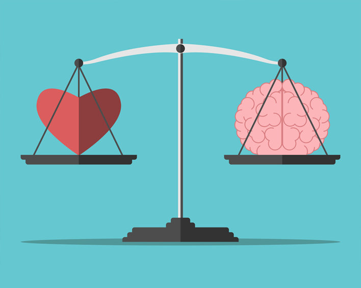
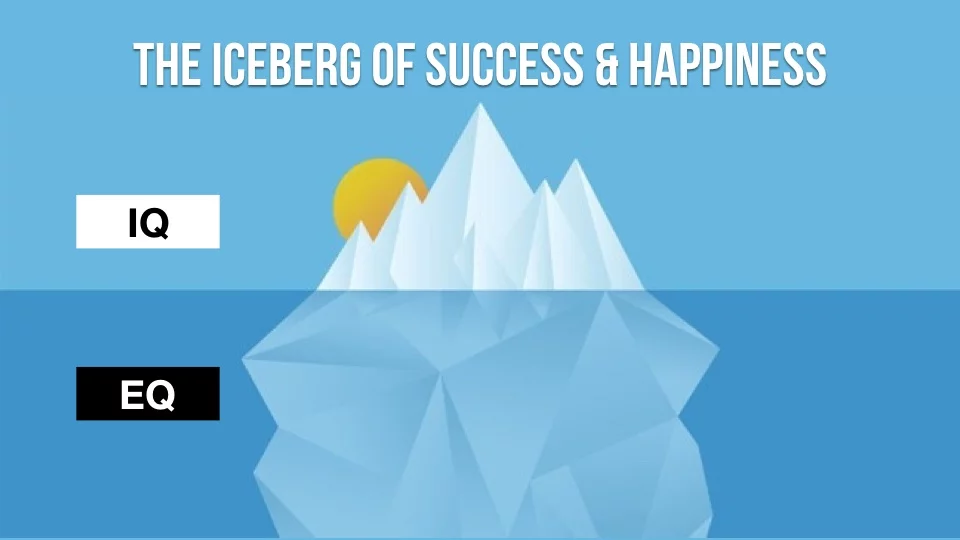

What is Emotional Intelligence?
Emotional Intelligence is being aware of your own actions
and feelings and how it
affects those around you as well as how it affects yourself.
Being aware of how you and others are feeling and changing
your
actions to suit.
How is it different to IQ?

IQ measures someones cognitive intelligence while EQ is the
measure of someones social and emotional intelligence.
Why is it important?

Psychologist Daniel Goleman estimates that IQ makes up about
20 percent of the factors that will determine life
satisfaction and success. It is the other elements like EQ,
family, education as well as pure luck that make up the
other 80%. This means that while the cognitive skills such
as
memory, reasoning, verbal comprehension and processing speed
will help person to succeed academically, it will only get a
person so far. In order to really succeed and life a happy
well rounded life you need to have social-emotional skills
like motivation, coping mechanisms and perseverance.